Első feladatként szeretném egy példafeladattal bemutatni az Excel általános felhasználási folyamatait.
Először is a táblázathoz adok hozzá példa adatokat a bemutatás miatt, de ezeket egyéni preferencia is lehet, ha van már egy kész adathalmazunk azon is gyakorolhatunk.
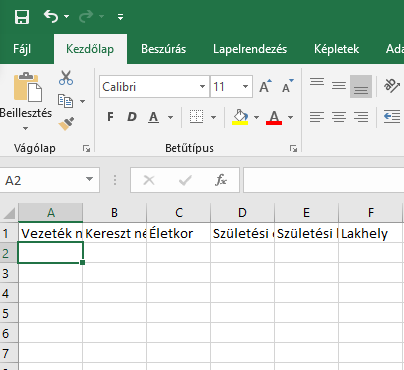
Először beírtam az első cellákba azokat az információkat amik segítenek megállapítani egyes oszlopokban milyen adatok lesznek.
Látható, hogy a beírt szöveg nem fér ki a cellákba, ezt a két oszlop közötti vonalra két kattintással ki tudjuk küszöbölni. Ez a funkció automatikusan állítja a cellák méretét a beírt szöveghez.
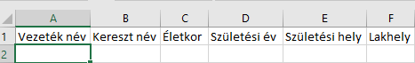
Ezután feltöltöm az általam kitalált adatokkal
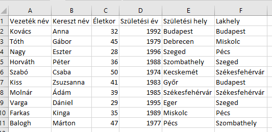
Ezt követően formázom a meglévő adataimat.
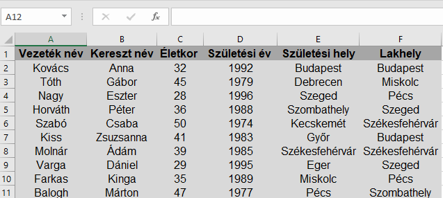
Középre igazítottam, beállítottam a betűméretet és betűtípust, kiemeltem a magyarázó cellákat.
Adtam hozzá szegélyeket.
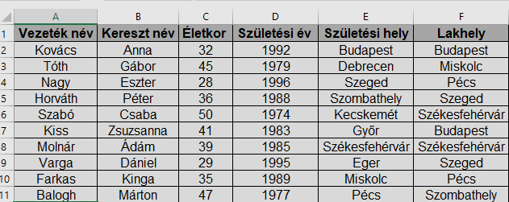
Következő feladatként adjunk címet az adatainknak
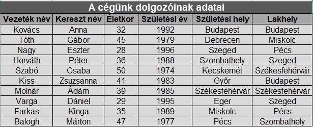
Ezt úgy tudjuk megtenni, mivel fölöttük nincs több hely, hogy beszúrunk egy új sort. Legegyszerűbben jobb egérgomb új sor beszúrása.
Ezután, hogy a teljes adatokat lefedje a cím cellaegyesítéssel egy nagy cellát hoztam létre. Ezt a kezdőlapon találjuk.
Ezt követően az adatokat szeretném a Vezetéknevük alapján sorba rendezni. Ehhez ki kell jelölni az embereket tartalmazó cellákat, majd a rendezés szűrés menüben válasszuk az elsőt.
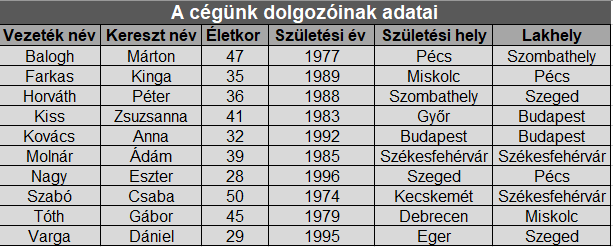
Következő feladatunk a függvények elsajátítása. Így hozzáadok cellákat a táblázatomhoz.
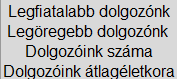
Majd az Excel függvényei segítségével feltöltöm a mellettük lévő üres cellákat.
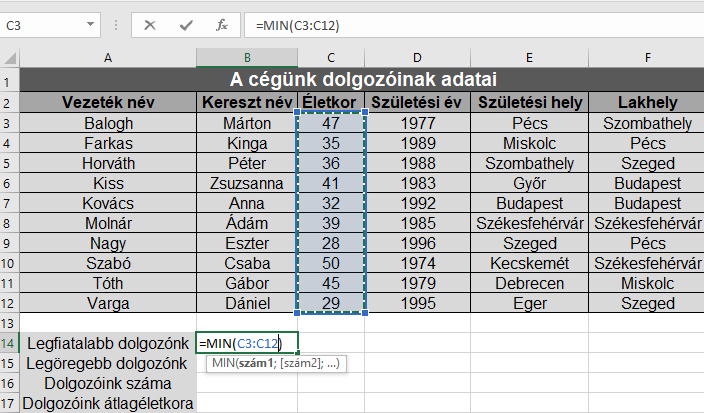
A Kezdőlap Szerkesztés oldalán a függvényeknél kiválasztjuk a minimumot ez adja a legkisebbet. Majd egyszerű egér mozgatással kijelöljük a kívánt cellákat, amik most a dolgozók életkor mezőik.
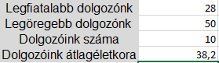
Legöregebbet a maximum függvény adja. A dolgozók számát a darab függvény. Átlagukat pedig az átlag.
Következő feladatként szűrjük a Budapesti lakhelyű dolgozókat.
Ehhez Kijelöljük az adatokat a meghatározó celláikkal együtt, majd a rendezés szűrés közül válasszuk a szűrést.
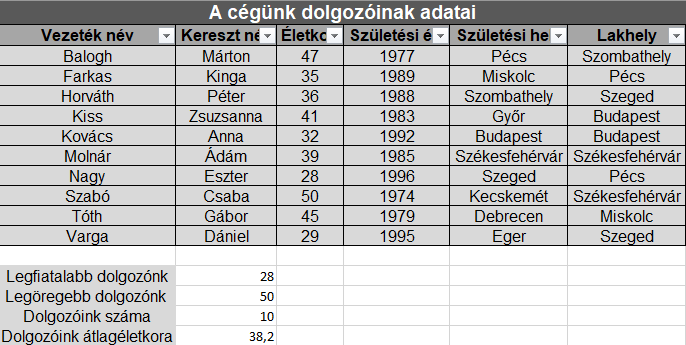
Ekkor megjelennek ezek a kis nyilak. Mivel most a Budapesti lakhelyt mondtam a lakhelynél nyissuk le a nyilat és válasszuk csak a Budapestet
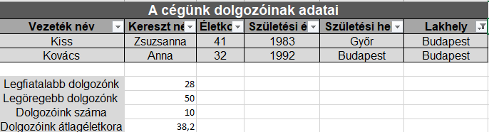
A kis nyíl megváltozott ebből látszik hogy szűrtek az adatok. Valamint csak a Budapestieket látjuk.
Ezután készítsünk diagramot a dolgozók életkoráról.
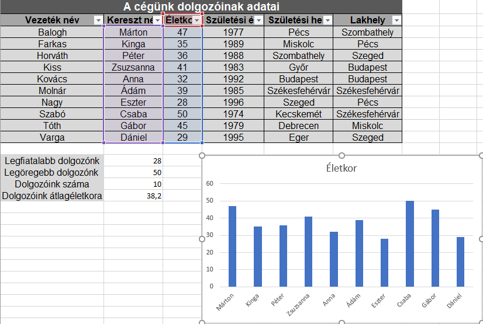
Ehhez kijelöltem a Keresztnév és életkor adatokat majd a beszúrás lap ajánlott diagramok közül választottam egy tetszőlegest.
Ez egy remek gyakorló feladat az Excel alapvető funkcióinak gyakorlására. Kérem tetszőleges adatokkal próbálják önállóan is hasonló feladatokkal elsajátítani a táblázatkezelést.